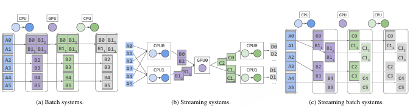

背景
数据处理对机器学习ML应用至关重要，ML工作负载是GPU密集型的，需要大量的IO和CPU资源来加载和预处理数据，并将数据移动到GPU当中。基于CPU的预处理在训练和批量推理中往往是瓶颈，同时ML模型所需的数据处理功能也变得更加多样，需要包含文本、图像、视频等多模态数据的处理，这些工作负载需要复杂的变换和资源需求。
资源异构要求跨不同算子进行流水线执行，以最大化整体利用率。在异构环境中还需要具备弹性，以保持整体流水线负载均衡，因为针对每条数据记录和每个算子的最优资源分配可能直到运行时才可知。
批处理系统和流式系统无法同时满足这两项要求。批处理系统将数据集划分为分区，分区可由任意执行器处理，从而实现弹性与细粒度恢复。然而，批处理系统一次处理一个算子，这阻碍了流水线化并带来较高的内存开销。流式系统作出相反的权衡：它们允许执行器缓冲数据，并以大小动态调整的批次直接相互发送数据。这带来了异构资源利用率的提升和更低的内存使用量。然而，每个算子和数据范围都绑定到一组特定资源，因而难以动态地对输入进行负载均衡、调整每个算子的资源分配以及扩展集群。

Ray Data是一个面向异构工作负载的流式批处理系统，其工作负载涵盖批量推理与ML训练。其核心思想是以分区作为执行单元来实现弹性，同时允许分区被动态创建并在异构算子之间流式传输，以实现内存高效的流水线执行。在Ray Data当中，分区是大小动态变化的记录批次，每个分区由一个或多个任务消费，每个任务执行一个算子，并动态产生一个或多个输出分区。任务动态分配资源，从而在实现弹性的同时支持跨异构资源的流水线执行。
流式批处理模型
流式批处理模型面临两项挑战
- 支持动态大小的分区
- 将集群资源动态分配给分区
Ray Data调度器决定初始数据集分区，并维护每个分区当前状态的全局视图。调度器提交任务以处理物化分区，每个任务产出输出分区流。每个执行器根据目标分区大小和实时的内存消耗来决定如何对输出进行分区。为了降低调度器负载，Ray Data使用Ray Core的特性，使执行器只需将输出分区的引用返回给调度器而无需返回数据。Ray 要求任务一次性返回所有输出，而基于谱系的恢复要求输出数量必须预先已知，因此Ray Data额外扩展了Ray的任务调度和血缘系统来使任务可以流式传输其返回的引用。
Ray Data实现了类似于流处理系统的保守型背压机制和使用性能剖析引导优化来估计未来可用内存，从而实现稳健的乐观调度。两种策略都可以指定。
| 批处理系统 | 流处理系统 | PyTorch DataLoader | tf.data | Streaming batch(Ray Data) | |
|---|---|---|---|---|---|
| 动态分区 | 不支持 | 支持 | 不支持 | 支持 | 支持 |
| 动态资源分配 | 支持 | 不支持 | 不支持 | 支持（仅本地资源） | 支持 |
| 容错方法 | 血缘 | 检查点 | 不支持 | 检查点 | 血缘 |
| 最小回滚粒度 | 分区 | 记录/Epoch | 作业 | Epoch | 分区 |
| 异构节点类型 | 支持 | 支持 | 不支持 | 不支持 | 支持 |
Ray Data 使用 Dataset API，Dataset 表示一个应用的流水线，其操作是惰性的。
创建 Dataset 后，用户通过调用某个消费型 API 来触发执行，Dataset表示为逻辑算子的DAG，随后系统的查询规划器将逻辑DAG编译为物理算子的DAG，并决定第一个算子要使用的分区数。
Ray Data将Ray作为任务后端，将中间数据分区存储在 Ray 的分布式对象存储中。Ray Data 调度器运行一个连续循环，在以下两者之间交替：等待一个已分派的任务物化出输出分区并释放其资源；以及选择一个新任务在任何可用资源上运行。
系统设计
查询规划
查询规划器将逻辑DAG转换为物理 DAG，然后应用算子融合以及面向读取的初始分区等优化。Ray Data使用足够多的分区以使用所有可用的执行槽位，但不会多到使每个分区都很小。
查询执行
Ray Data 调度器维护物化分区，正在执行的任务以及可用资源视图。调度器维护每个分区的以下元数据：行数、字节大小和节点位置（用于数据局部性）。对于每个算子，调度器维护一个输入输出分区队列，以Ray引用的形式存储，然后执行以下的循环
- 等待某个执行中的任务物化出一个输出分区。将该分区引用压入下游算子的输入队列。任务可能产生多个输出分区；若此为最后一个输出分区，则释放该任务占用的资源。
- 当存在空闲资源且有已排队的输入分区时，按照调度器策略选择一个物理算子运行。为该算子启动一个新任务。将该任务所需资源标记为已占用。
为了启动新任务，调度器传递待执行物理算子的闭包以及该任务输入分区的引用。Ray 确保在任务执行器上将所有引用替换为实际数据。一旦某个引用对应的下游任务被提交，调度器就会删除该引用，从而向Ray表明该数据可在任务执行后进行垃圾回收。
动态重分区
查询规划器对所用分区数量的初始估计可能并非最优，Ray Data使用动态重分区来处理此类情况。Ray Data使用生成器任务扩展 Ray使得远程任务能够产生动态数量的输出，并与任务的调用方进行流水线化执行。每当任务产出新的输出分区时，它都会通过 RPC 通知 Ray Data 调度器。收到通知后，调度器会重新运行调度循环，并可启动下游任务。与此同时，上游任务继续生成其下一个输出。
如果需要控制 GPU的批大小，ray data提供了map_batches API，它接受批变换函数和目标批大小，Ray Data通过对输入分区的切片进行迭代确保批的大小。Ray Data 调度器还会将过小的分区合并至期望的批大小。
故障恢复
Ray为对象提供自动恢复，需要满足以下几点
- driver仍然存活
- 创建这些对象的任务具有确定性且无副作用
- 任务参数和输出不可变
对于生成器任务，因为再提交时不知道任务将产生多少输出，3不再成立。但是如果2成立，那么可使动态重分区具有确定性。给定目标分区大小和纯函数，确保了Ray Data在相同的输入分区执行时，将产生相同的输出分区流。为了支持生成器任务的故障恢复，Ray Data修改ray的恢复子系统以处理数量未知的任务，在生成器任务首次成功执行时，调用者记录该任务产生的输出数量，如果任务的任何输出丢失，那么通过重新执行整个任务来恢复，如果任务产生不同数量的输出，那么会抛出错误。
与其他批处理系统和流处理系统类似，如果集中调度器死亡，那么Ray会进行垃圾回收，因此Ray Data必须从头重新执行。可以通过额外 checkpoint 缩小回滚范围。
调度器策略
调度器策略的输入是
- 操作符的物理DAG，每个操作符标注资源需求例如CPU和GPU的数量
- 集群资源：每个集群的 CPU、GPU等资源的数量以及存储分区信息的共享内存池的内存容量
调度器策略决定了集群资源与操作任务/分区之间的映射。每当任务完成时，策略可以将释放的资源分配给新的任务。调度器将共享内存容量作为硬性限制，Ray Data通过优先处理输出队列较短的操作符，并在达到全局内存限制时暂停进行中的任务，来实现悲观策略，类似于流系统当中的背压机制，这种机制可能导致原本能与下游同时完成的上游Task启动的太晚。Ray Data还实现了基于运行时信息达到最小化停滞的乐观策略。
乐观策略通过预估未来内存何时可用来实现最小化停顿。调度器需要估算每个算子的处理速率，需要使用任务持续时间和输入输出比信息。下面的算法描述了乐观策略的循环调度，但是在内存受限时，该策略会导致资源利用率不足。
1 | Algorithm 1 Adaptive Scheduler |
输入速率，即调度源任务的速率，需要近似于流水线的整体吞吐量。Ray Data使用动态内存预算算法来调节源任务的启动速率。下面的算法补充了预算来调节源任务的启动速率。
1 | P←0 ▷ Total processing time per partition |
Ray Data基于 Ray进行实现，Ray提供了基于动态任务执行的低级执行模型，具备自动数据移动、基于血缘的恢复以及磁盘溢出等功能，这使得构建Ray Data的集中调度器变得方便，同时利用Ray作为去中心化的数据平面。同时Ray Data在Ray之上进行了扩展，支持了数据集分区以及流水线感知任务。
理解
Ray Data在异构ML pipeline场景下，同时实现了流水线执行和资源的动态使用，提升了CPU和GPU资源的利用率。Ray Data同时保留了批处理系统的可移动性和血缘重建特性以及流处理系统的流水线执行特性，按照partition为边界分配异构资源，避免长期绑定某个资源。